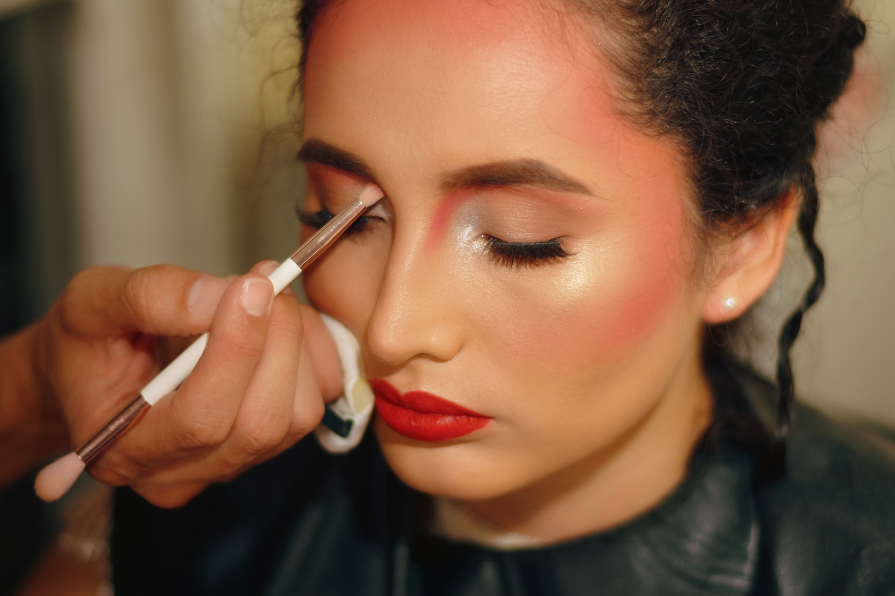
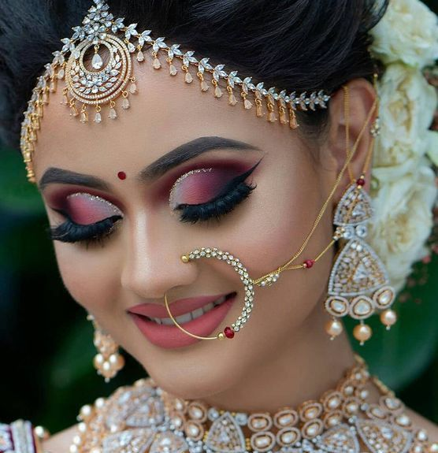
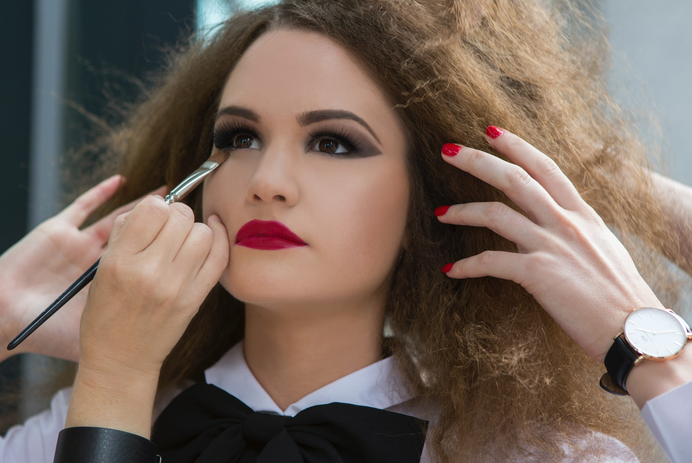

Subscription
Heavy-Makeup


- Step 1: Cleansing your face
- Step 2: Moisturizing your face
- Step 3: Applying primer
- Step 4: Applying foundation
- Step 5: Conceal blemishes or dark circles
- Step 6: Seting your makeup with powder
- Step 7: Applying bronzer to contour
- Step 8: Applying an eyelid primer
- Step 9: Applying eyeshadow
- Step 10: Highlighting your eyes with an eyeliner
- Step 11: Applying eyeshadow under your eye
- Step 12: Applying mascara

- Step 13: Applying blush
- Step 14: Moisturizing your lips
- Step 15: Using a lip liner to line your lips
- Step 16: Applying a bold lipstick color
- Step 17: Bloting your lips with a tissue
- Step 18: Seting makeup with makeup setting spray